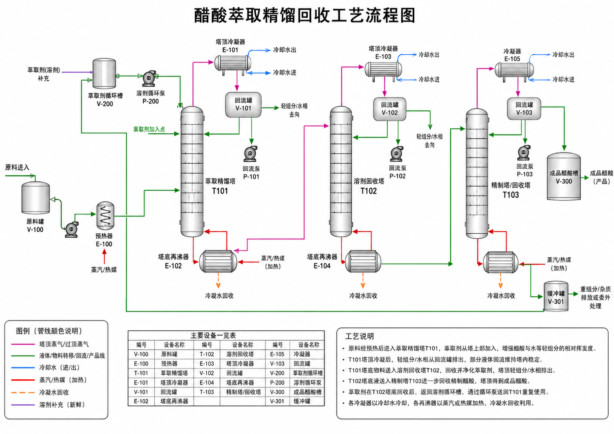
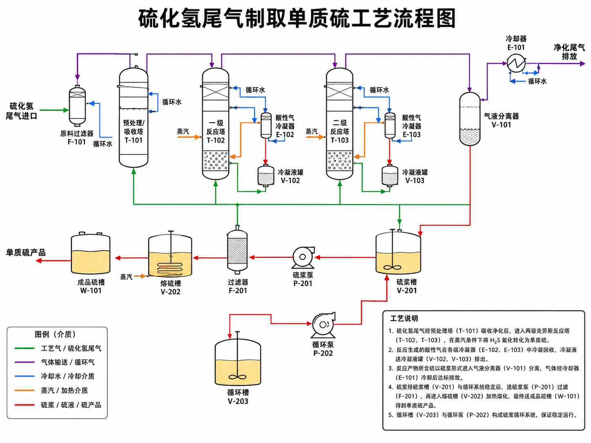
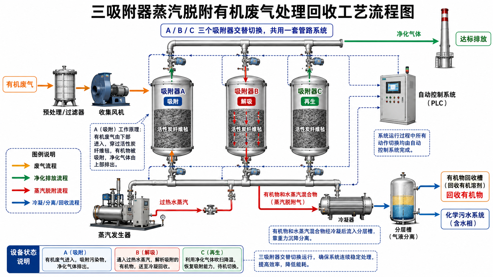
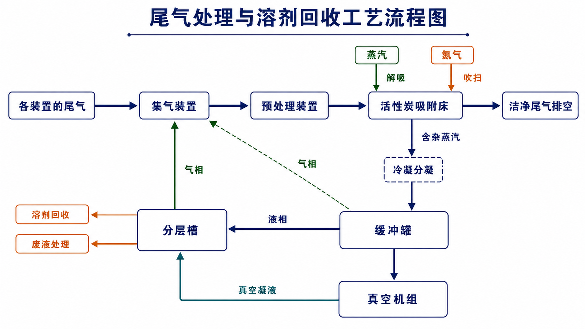
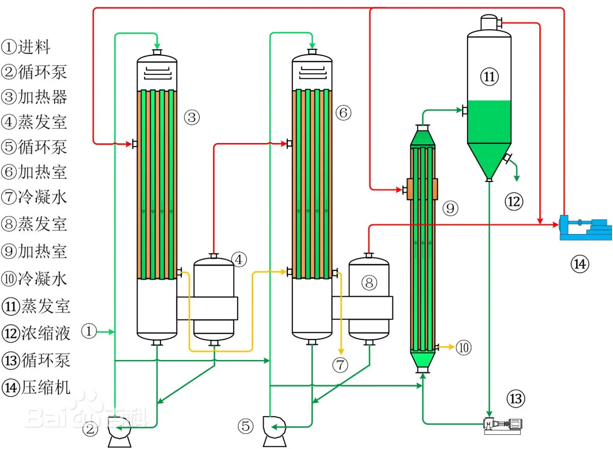
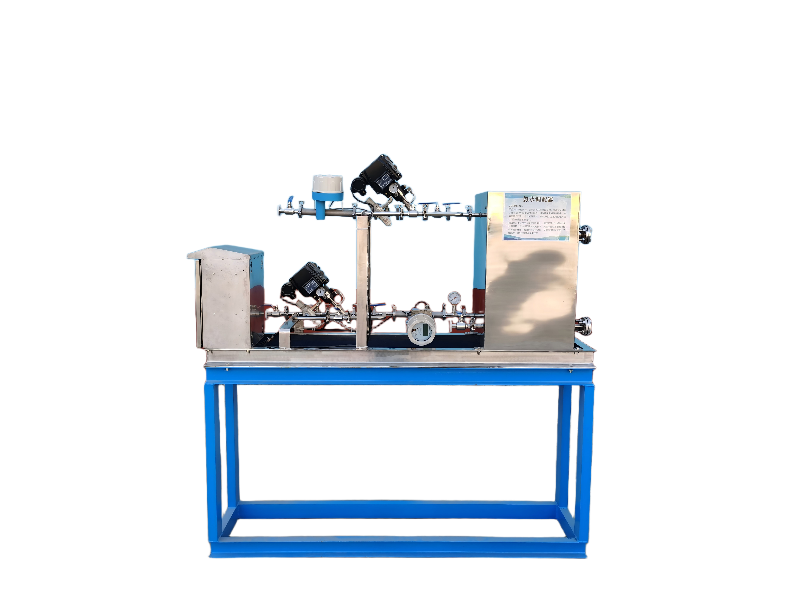
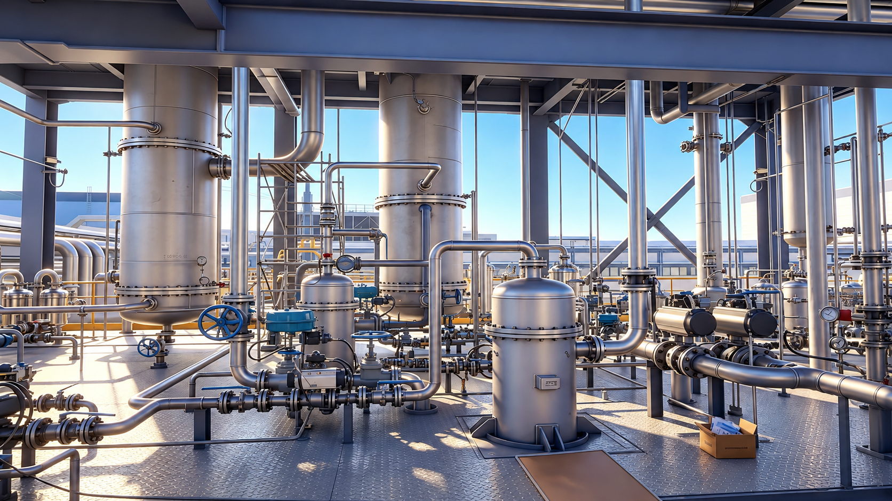

Process Solutions
工艺解决方案
围绕精馏分离、硫回收、VOCs回收治理、蒸发结晶与混氨等核心工艺包，形成从实验验证、工艺设计到设备制造和现场交付的系统化解决方案。
Solution Map
成套工艺路线
01
Distillation Separation
精馏分离技术及装置
石家庄辰泰环境科技有限公司通过整体融合精馏分离专业技术团队，组建了具有本公司特点的“化工节能过程集成与资源利用研究室”，致力于化工节能过程与资源利用的相关研究，在精馏过程与设备的研究开发和工业应用方面具有鲜明特色。多年来针对多家大中型化工企业，尤其是超高分子量聚乙烯材料、隔膜材料、PE新材料、新能源等行业的技术难题，创造了显著的经济效益和社会效益。
公司的热泵精馏技术可显著降低传统精馏工艺的蒸汽和冷却水消耗，在化工、石化等领域应用广泛，可使费用降低50%以上。多效精馏技术的应用，能实现40%以上的节能效率，助力多个行业的节能降耗。变压精馏通过压力变化实现共沸体系的高效分离，在医药、精细化工以及新能源等领域应用价值较高。
隔壁塔精馏广泛应用于精细化工、石油化工及新能源行业，比传统多塔精馏可节约30%的投资费用和60%的运行操作费用，特别在高纯电子级别溶剂的生产中有不可比拟的优势。
公司拥有众多溶剂单品的回收案例和液相溶媒回收过程实验室，拥有醋酐制造、醋酸回收等多项完整工艺包，可模拟各类溶剂回收过程，形成完整的模拟参数分析，可以做到从原料到成品的全过程。公司拥有一支技术过硬、品质优良的团队，能够完成从项目基础设计、施工、设备制造、安装调试和验收的全流程工作。

02
H2S Treatment & Sulfur Recovery
硫化氢尾气综合治理与硫回收技术及装置
本工艺采用络合铁或PDS为催化剂，利用Na2CO3或NH4OH为碱源，将废气中的硫化氢，吸收还原生成单质硫，同时，碱液可循环使用。相较于传统碱洗工艺大大节约运行费用，有明显的经济效益。

脱硫工艺
将含H2S的尾气从塔底进入脱硫塔，与塔顶喷淋下来的脱硫液充分接触，吸收了H2S的脱硫液从脱硫塔下部回流至反应槽。
再生工艺
通过脱硫液循环泵将硫富液抽送进入再生塔，通入大量空气对脱硫富液进行氧化再生，再生后的溶液从塔底自流回脱硫塔循环使用。
后处理工艺
从再生塔顶部浮选出的硫泡沫，进入硫泡沫槽，经过熔硫釜的熔硫工艺，最后生成硫磺成品，排出的清液则返回脱硫塔。
06
VOCs Recovery
VOCs尾气回收治理技术及装置
我们通过自有真空负压专利技术，融合高效吸收与真空脱附、深度冷凝等组合工艺，保障尾气回收治理安全性，并使动力消耗减少40-60%，污水量减少50-80%。

07
GAC VPS Recovery
颗粒活性炭真空负压（VPS）回收装置
以吸附、解吸性能优异的真空专用颗粒活性炭作为吸附剂，将有机废气中的有机物吸附，利用真空负压将吸附的有机物脱附，液化回收、再利用。
- 整个脱附再生过程没有外界氧气的参与，无死角脱附，脱附温度更低、更加安全。
- 节约40%以上的能源消耗，减少50%的污水排放，污水处理压力更小。
- 吸附材料的使用寿命增加50-200%。
- 低脱附温度极大降低有机物的分解，从而减少设备的腐蚀性，设备的使用寿命增加50-200%。
- 更容易做到环保达标排放。
颗粒活性炭（GAC）有机尾（废）气吸附净化回收装置：利用吸附、解吸性能优异的颗粒活性炭作为吸附剂，可将有机废气中的有机物吸附，并将有机物予以回收再利用，净化率可达90%~99.99%。
- 工艺流程简单，操作方便，自动化程度高。
- 吸附容量大，吸附效率高，有效使用时间长。
- 投资少，见效快。
- 有卓越的安全性能，适用于易燃易爆场所。
- 性能稳定，技术成熟。
- 设备操作弹性大，可承受风量、浓度的剧烈波动。
- 投资回报期短，通常一年内可收回投资成本。
- 设备使用寿命长达10年，GAC的更换周期为1.5-3年。

08
Multi-effect Evaporation
多效蒸发系统
多效蒸发是通过串联多个蒸发器，将前效的二次蒸汽作为下一效加热蒸汽的串联蒸发操作，通过逐级利用蒸汽潜热实现热能节约。在各效中，操作压力、加热蒸汽温度及溶液沸点依次降低，工业应用最常用2～3效。该系统广泛应用于化工、制药、食品等行业，适用于海水淡化、高盐废水处理及物料浓缩等领域。

09
Ammonia Mixing
混氨技术及装置（氨水调配器图）
液氨储存条件严苛，通常需高压或低温储罐，存在安全风险，而实际使用多需稀释为氨水。但传统加水稀释过程中，液氨易剧烈气化，导致氨气挥发、压力波动及浓度难控等问题，还需额外监管液氨储罐，增加安全隐患与成本。
我公司自主研发的《氨水调配器》，可在液氨卸车时直接与水按比例混合，一步生成所需浓度的氨水，无需单独设置液氨储罐，既避免液氨储存风险，又精准控制浓度，简化流程，提升安全性与使用效率。

10
Mechanical Vapor Recompression
MVR系统（配图）
MVR系统将低温低压的蒸汽经过压缩机进行压缩，提高蒸汽温度和压力，然后将高温高压的蒸汽传递给蒸发器，用于加热液体，使液体中的水分蒸发分离。蒸发后的蒸汽经过冷凝器冷凝回收，再经过再压缩，形成循环，实现高效能量利用。
- 高效节能：采用机械蒸汽再压缩技术，能够充分利用能量，节约能源消耗。
- 环保节能：蒸发过程中产生的蒸汽可以进行冷凝回收利用，减少能源消耗和环境污染。
- 稳定性好：采用循环压缩蒸汽的方式，能够稳定控制蒸发温度和蒸发效率。
- 自动化程度高：可实现智能控制和远程监控，操作简单方便。
